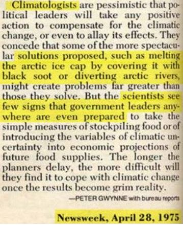

This is part 5 of a multi-part post.
Please kindly note that this post has multiple embedded videos. It is important to view them. If they fail to load, all you need to do is to reload your browser.
Organization
Why did you organize this blog the way you did. Why didn’t you just “get to the point”?
Well, I ask you, the reader to now put this manuscript down, and turn on the television. Watch CNN, or ABC, or MSNBC. Watch it for one hour. Are any of the subjects, situations, conclusions, information, or characteristics stated in this manuscript mentioned by the American news media?
No. None of them.
That one hour of television that you, the reader, watched is the sum-total of the “reality” of a vast bulk of the American population. My “reality” is quite different. So the only way it can be presented is in stages.
Proof
All of our life, we were taught in school what was truth and what was lies. We were taught what to believe, what to ignore, and what to disparage. These were important teachings for they enabled us (naturally square pegs) to fit in round holes.
Today, those of us who have not shaken free from our government-approved programming still demand total and complete explanations. We want full validity in order to accept the belief in something.
Can you prove to me that what you say is fact?
No I cannot.
All that I can do is relate what I know, and it is up to you the reader to accept or discard my experiences and conclusions. If you wish to think of this entire manuscript as a complete fabrication, go ahead.
I am on the way out. It won’t make any difference. All I can do is relate my experiences to the world-line “template”.
- My grandfather once told me a story about how, when he was in France during World War I, that he went into a barn to sleep during the night. He slept in the hay and it was able to keep him and his companions warm. When he woke up the next day, he found three dead German soldiers lying nearby him. It’s a curious story. Is it true or false? I do not know, but I do believe him.
- When I was in the Cub Scouts, I learned about Paul Bunyan. I heard (and read in our Cub Scout manual) that he had a big (blue) ox named Babe. Was it true, or fiction? I do not know, but I do believe that it is probably a local folktale that was based on true events, and that over the years became exaggerated. In Kokomo, Indiana is a famous attraction called the “stump and the steer”. That’s a pretty huge bull.
From this website; https://www.roadsideamerica.com/story/3620 “When Old Ben was Newborn Ben in 1902, he was the largest calf in the world and "an object of wonder," according to a sign in front of his stuffed carcass. He lived and grew, and grew, on a farm about a dozen miles north of Kokomo. By the time he was four he already weighed over two tons. Ben was the most famous animal in Indiana when he fell and broke his leg in early 1910. The doctor who was called to help Ben shot him. Ben weighed nearly 5,000 pounds, he was over 16 feet long, and "his tongue filled a dishpan," according to the back of an old Old Ben post card. His hide was stuffed and mounted on wheels for easy transport. His body was ground into several hundred pounds of Indiana frankfurters. Old Ben's owners exhibited their dead prodigy for a few years, then either donated or sold him to Kokomo's Riverside Park. Ben went into semi-retirement, emerging periodically from storage to pose for publicity photos, particularly during World War II with 20-year-old bathing beauty Phyllis Hartzell, an image that circled the globe with American GIs. It wasn't until 1989 that Old Ben again became a full-time public attraction, when he was placed inside a glass-enclosed pavilion next to the World's Largest Sycamore Stump, his wheels hidden by hay. In 2004 some morons broke in and stole Ben's tail. It was so long that three normal-size steer tails had to be stiched together to create a new one. In 2015, on the day after Thanksgiving, the public was invited inside the pavilion for the first time to get up close to Ben, a tradition that we hope continues. No one could ever explain why Old Ben was so large, but both he and the Stump are excellent ambassadors for the ecosystem of Kokomo, real versions of the fake giant vegetables and animals seen on vintage post cards. They grow 'em big here.”
- When I was attending elementary school in the late 1960’s, the “green movement” was getting started, and sometime during my time in 7th grade (maybe 8th grade), we were educated on the importance in protecting the environment. We learned about how limited the materials were on the earth, and how it would be best to recycle. We learned about Global Cooling and how if we didn’t so something quickly, that the earth would enter a new ice age, maybe by 1975, certainly before 1980.
Global Cooling All of us were organized into work teams, and we would go out on excursions cleaning up the nearby waterways and trees. We picked up litter on the sides of the road. I was even photographed for an article in the Butler Eagle where we cleaned up a local stream of trash. We were all involved in collecting funds to save the environment. We went on door-to-door collections to raise money for the cause. Was Global Cooling true? On the other hand, was it a fiction? I do not know, however, given what I now know about life (being older), politics and organized manipulation, as well as multi-dimensional world-line travel, I do think it was a whole bunch of organized hooey designed to manipulate us into parting with our money. Every day we had to listen to a lecture from our teacher how our environment was changing. Then after the lecture, our teacher would pull out his guitar and we would sing songs. And, yes. kumbaya was one of them. We would give our lunch money to the teacher "for the cause". Butler Eagle The Butler Eagle is a daily newspaper published in Butler, Pennsylvania, United States. It serves the Pittsburgh metropolitan county of Butler. Global Cooling Global cooling was a conjecture during the 1970s of imminent cooling of the Earth's surface and atmosphere culminating in a period of extensive glaciation. This hypothesis had support in the scientific community, and it gained immediate popular attention. The official narrative is that the attention was due to a combination of a slight downward trend of temperatures from the 1940s to the early 1970s and press reports that did not accurately reflect the full scope of the scientific climate literature. Today, the narrative (fully funded by the Obama administration) is one which shows a body of literature projecting future warming due to greenhouse gas emissions. However, this literature has been identified as intentionally-falsified data. https://www.prisonplanet.com/ipcc-scientists-caught-producing-false-data-to-push-global-warming.html http://principia-scientific.org/nasa-exposed-in-massive-new-climate-data-fraud/ http://www.geoengineeringwatch.org/geoengineering-falsified-data-and-global-warming/ https://chemtrailsplanet.net/2014/06/24/nasa-and-noaa-caught-using-falsfied-data-in-climate-change-reports/ http://www.breitbart.com/london/2014/06/23/global-warming-fabricated-by-nasa-and-noaa/ https://www.forbes.com/sites/peterferrara/2012/03/01/fakegate-the-obnoxious-fabrication-of-global-warming/ http://www.libertyheadlines.com/obama-administration-falsified-climate-change-data/

Believe what you want. Keep in mind that it’s YOUR reality.
The time for me to go about gathering proof due to the sloth of a given reader will take from my enjoyment of life. Why should I waste any time trying to prove something to the lazy and ignorant?
Why?
Hey! I’m not in elementary school. I do not have to prove anything to anyone. Certainly not some anonymous smuck hiding behind the anonymity of a computer screen
This is what I could (and will be doing) instead of collecting “proof” for people to consider. Take note everyone. Check it all out. The important things are all there… girls… drinking wine… singing… dancing… everything.
All that is missing is a dog and a cat or two. Listen up.
This is my life…
I can NEVER be able to provide enough “proof” to appease the nay-sayers. Instead, I have opted to explain to the reader what I was involved in before I die and it is all forgotten. That’s the thing. What I experienced really happened, and it should be recorded for posterity.
It was exceptional, it was outstanding and incredulous. I for one want to leave something behind so that what I experienced does not vaporize upon my death.
But, people being what they are, will not understand. They will demand “proofs” that will never be enough. So I explain as best I can with the tools at my disposal.
It’s sort of like this…
All that being said, it’s not that I am being a dick about things, it’s simply because I know how this world (and this universe) works. It’s controlled by thoughts.
Thoughts.
Thoughts define our reality.
So, I could waste hours trying to convince someone about something, but in my mind it is all a waste of time. Instead my thoughts are directed at things of more importance… ME.
The life I have is not all that terribly unobtainable. You just buy a couple of cases of wine, and rent out a KTV room, and a big hotel room. Then you invite a bunch of pretty girls to sing, dance and play with you. That’s all there is to it. You get some extra robes from the hotel front desk for the girls to wear when they peel off their swimsuits. It’s not a difficult thing to do at all.
Then you all get drunk and sing. You dance. You get a little crazy, and the girls get a little frisky. You all have fun.
Everyone is different. But we are all surrounded by people who would just love to be our friends. So you make it easy for them. You smile. You be kind. You think good things, and say good things. You be a fun and cheery person to be around, and the sun will come out from behind the clouds and people will start to smile back at you.
In my case, for me, since there are so many K-Pop, and C-Pop dance studios around me, it’s easy for me to go next door and invite the gals out for some fun. It helps when I bring my dog. (He’s a real chick magnet.) Everyone likes free delicious food, wine and KTV fun.
What you think about materializes right before your very eyes.
People, when life (or the universe) gives you opportunities, you take them.
Our reality is created by our thoughts.
I am surrounded, by what ever reason (thoughts), by all these K-Pop and C-Pop dance and training centers. I cannot go out the door without meeting these girls whether it is in the hallway bathroom, near the stairs, near the elevators or any of the doors. So, you take advantage of it. You meet the people. You smile and talk.
That what our reality is all about.
Thus, this is what my reality is…
Not to mention that they don’t mind at all when I offer to take the entire troop out for food, drinks, song, dance, and swimming. We make an entire night of it. Then later, they often repay the favors many times over.
You could do that with your life right now. Everyone likes beer. Everyone likes wine. Everyone likes delicious food. By going out and making friends you will start to have an absolutely amazing life.
Do Not Squander It.
Obama the Time Traveler
There is a cult (numerous ones actually) where people (acting like sheep) follow charismatic people. These followers often attribute God-like powers to the object of their affection.
Was President Obama a time traveler, as some have alleged?
No.
Of course, others disagree with me. http://beforeitsnews.com/paranormal/2014/01/is-president-obama-a-time-traveler-this-photo-raises-questions-2463366.html http://www.liberalamerica.org/2014/01/27/pres-obama-time-traveler-photo-raises-questions/ http://www.eonline.com/news/343270/barack-obama-is-a-time-traveler-and-other-amazing-and-nsfw-facts-from-dnc-comedians http://www.thepilot.com/opinion/is-obama-a-time-traveler/article_a514d22a-0c2b-11e3-81c3-001a4bcf6878.html http://www.nbcnews.com/id/45878146/ns/technology_and_science-space/t/conspiracy-theory-obama-went-mars-teen/ .
Our Future
What will happen in the next 20 years?
I do not know. I do know that the generational cycles are intact and very complex changes are taking place. How they will manifest is anyone’s guess. However, this cycle that we are in will probably last for another decade; well past 2025.
It will be “colorful”, and for many “difficult”, as there will be a segregation of sentience types and determination.
Being a Pig
I don’t get a lot of these kinds of posts, but when I do, it’s usually from a triggered SJW female who has (more than a few) things to tell me from behind the safety of anonymity of her computer.
Often enough, she doesn't know that I track all responses via ISP and tracking algorithms. So, I do know who or (more properly) "what" is bitching to me.
Always, no exceptions so far, it is a person who [1] hasn’t read anything other than a few paragraphs of a specific post, [2] hasn’t taken to the time to learn about me or why I write like I do, and thus [3] churns off an emotionally-laden e-mail fully expecting me to publish it.
I never do.
The e-mail generally goes something like this…
Why are you such a pig? (Often using the latest in feminist baffle gab instead of the word “pig”.) Why include the information about girls in China, and the sexual information about Thailand? It serves no purpose, it only makes you looks like a horrible person.
Now my response…
Life is different for different people. We all live our own different realities. In fact, we can create the realities that we want through thought and followed upon with action. This is true whether or not one wants to believe it.
Each reality that we participate in will offend others who have different thoughts and different subsequent realities.
Therefore, the reader should stop being so fucking judgmental.
Rather than judge others, lose some weight, take care of yourself, think good thoughts and surround yourself with things that matter. There is no need for me to censor my experiences to tend to the fragile sensibilities of the sheltered ignorant. That is their own job.
Enough about the complainers. Now, about me; I was a “good boy” and played by all the rules.
I never cheated on my wife. I did what was expected of me. I studied hard, and got the best grades. I supported a terribly sick wife (schizophrenia), and then when she left me for another man, I quit my job to take care of my dying mother. Then, I was retired. In the process, I lost everything and was punished by hard labor. When I was released I had nothing left physically.
About my first wife... She met a man in the state run mental institution where she had to spend nine months. (She was sentenced there because she kept on breaking into people’s houses to rescue girls (that she believed were) locked in the basements there. Fucking news media... getting everyone all hot and bothered. Of course, there wasn’t anyone there, and the home owners did not appreciate her actions. So she was arrested and sentenced to nine months incarceration in a State mental health facility. While there, she met a fellow with an illness similar to hers. She was instantly attracted to him. He was a dark swarthy heavily tattooed thin and lean man who was also sentenced to the institution. The reason was due to his very bad temper and habit of brutally assaulting his girlfriends. He was everything that I am not. So, it was a like a magnet to steel for my wife.
It’s called “life”, and it hurts.
Life can take it’s toll on you. You can study, work hard, be the best that you can, and still have the rug pulled out from under you. There is nothing “fair” about life. It’s all about the experiences you have and the thoughts that are generated around those experiences.
So I was retired from MAJestic, and everyone else in the United States thinks that I am some kind of sexual deviant. Fuck.
All I had was my wits and a heart burning in righteous anger. So yeah, fast-forward to today. I am now much older.
I am retired.
As such, I can be a “man”, and live my life on my terms. That is, MY terms. Now, if I want to have sex with a 25 year old who happens to like me, what business is it to you? If I want to eat a triple bacon pizza and chase it down with XO with a pretty girl in each arm, my dog beside my leg and my cat on my head, so be it. I am going to do what I want, like a real man.
If you do not want to know my story, you can leave.
If you want to learn, then put a clothes-pin on your nose and plow on. You have to listen to an old man who doesn’t care about being politically correct, offending people, or enraging snowflake SJW types.
If there is one thing that I would like to say to these beta-males and alpha-females, it is this; “Get a Fucking Life”. The rest of the world is having fun. What’s stopping you?
What is holding you back?
▶ Media file: @f4669526a6ce2516ad0f940c3054d008.mp4
I am an imperfect MAN.
I’m not groovy. I am not as popular as Yul Brynner. I’m not “hip” to all that jive, and “far out” stoned craziness youse kids so banter about all day. I am a man, and all men are imperfect. That’s what make us so absolutely wonderful.
Show me a woman who does not want to take an imperfect man, and make him perfect, and I will show you a chimera. They don’t exist.
I am not some kind of feminist version of a “knight in shining armor”. I am not a “pajama boy”. I am a man who found a lifestyle and nitch that is suitable for my own personal sensibilities.
The modern American man today…
Grow the fuck up, get some gawd-damn balls and live your OWN fucking life.
"Pajama Boy" is a derisive term for a photograph posted online in 2013 by the American political organization Organizing for Action (OFA) of one of its employees, Ethan Krupp, in support of the Patient Protection and Affordable Care Act, otherwise known as Obamacare.
BTW. How dare you call me a pig!
Most American women that do so are lonely, overweight, poor skinned, social justice warriors whose only success in life is through a phalanx of like-minded lesbian fat ignoramuses. You are the one with a body that is more pig-like.
This is how a woman is supposed to look like…
▶ Media file: ae616da9db835bed62b8533062de43fb.mp4
Don’t buy into my opinion? Take a good look at yourself in the mirror. Take your clothes off and actually look at yourself. Look. You, and your appearance is the DIRECT RESULT of your thoughts and your actions.
Are you alone? It is the direct result of your thoughts. Are you poor? It is the direct result of your thoughts. Are you trapped in a life beyond your control? It is the direct result of your thoughts.
EVERYTHING is a result of YOUR thoughts.
The gals who I am with are around me for other reasons not related to appearance. It serves their needs, so who are YOU to judge?
I am happy, and they are happy. We are all happy.
You, the funky opinionated observer, are the one that isn’t happy. Why is this? Are you trying to place your insecurities upon others to make you feel better? (Ouch!)
The truth hurts doesn’t it.
▶ Media file: @ebb9b6638aa7954523fe8bba6f55dde0.mp4
It has been my intention to provide my story as it is with all of it’s blemishes and imperfections to the reader. Some, more sheltered and ignorant in the ways of the world, will be offended.
I accept that.
That is why we have laws preventing children from watching ‘R” rated movies, and from drinking under the age of 21.
Yet, some children never grow up. They keep and hold on to their illusions well into adult-hood. I realize that some will read this manuscript in the privacy of their parents basement as an excuse to hide from the life that surrounds them. You all shouldn’t do that. You should go out. Make friends. Have some fun. Even if others make fun of you.
Life is too short, soon you will be my age.
Don’t fuck it up.
▶ Media file: 8f78e8889f765acfb4ea1d2be359bdf8.mp4
So to answer the question; “why am I a male chauvinist pig?”
Here is my answer.
Only a child would ask such a question. If you are an adult, and are still asking childish questions, you need to GROW UP! If you do not know why a man likes to look at pretty girls, then your mind is set at an infantile stage of development.
Most children learned about sex and began an interest in the opposite sex in middle school. If you believe that anything that you do not like is WRONG, then your behaviors are still fixed in pre-adolescence.
Grow the fuck up
▶ Media file: @41c990d03e01948b4279a91a2886c7b3.mp4
It’s a fucking shame. That’s what it is. Truth.
Oxia Palus Map
Why don’t you include a map of the Oxia Palus facility?
I did. I created a map using MS Visio and then included it in the Oxia Palus facility post. It was not fully complete, but mapped out the primary layout that I recalled.
It was kept in my documents for years. However in 2017 I had a strong “nudge” to remove the map, as well as to delete a vast swatch of specific information regarding this facility.
One of the things about this, and I will go back and edit this blog, is that no one really NEEDS to see the exact details. It distracts from the message, don’t you know. SO I will start deleting some of the distractions that tend to just bring confusion to the table.
John Titor
Why did you include the John Titor story?
The John Titor story is a segway towards understanding my program and my role. Without it, the reader would have to make a jump directly into my training and operational assignments. It would have been too easy to get lost in the terminology and descriptions.
Indeed, do you, the reader, enjoy reading refrigerator operation manuals?
Here there be tygers.
Why do you include so many references to Ray Bradbury: Here There Be Tygers?
Mother Earth News said it best;
“Because this story — as entertaining as it may be on the surface — is far, far more than a merely diverting and enjoyable tale. It is, in the truest sense, an allegory (allegory: a story in which people, things and happenings have another meaning, as in a fable or parable) . . . and a multi-leveled allegory, at that. Read this little piece carefully and — if you're ready for it — you'll begin to realize just what this beautiful planet (not "planet 7 of star system 84") is anxious to do for us if we'd only relax and let it . . . and what the true possibilities of life really are . . . and why man- and womankind seem so blindly intent on throwing themselves (and every other living creature) out of the Garden of Eden as rapidly and as violently as possible.”
Here’s the full text of this wonderful little story…

Purpose of the Type-I Greys
What is the purpose of the Grey species involvement with humans?
Their role is as “policemen” and “zookeepers”. They monitor our growth and report their findings to the <redacted>. As humans grow, and individual sentience is established, our species is culled.
Those that are of “service to others” sentience advances and are cultivated further by the <redacted>. Those that are “service to self” are also cultivated, but are policed and monitored by the Type-I greys.
Those that are not yet ready, continue to evolve in the purgatory that is Earth.
Purgatory = A place or state of temporary suffering or misery.
If you want to go to the start of this series of posts, then please click HERE.
MAJestic Related Posts – Training
These are posts and articles that revolve around how I was recruited for MAJestic and my training. Also discussed is the nature of secret programs. I really do not know why the organization was kept so secret. It really wasn’t because of any kind of military concern, and the technologies were way too involved for any kind of information transfer. The only conclusion that I can come to is that we were obligated to maintain secrecy at the behalf of our extraterrestrial benefactors.


MAJestic Related Posts – Our Universe
These particular posts are concerned about the universe that we are all part of. Being entangled as I was, and involved in the crazy things that I was, I was given some insight. This insight wasn’t anything super special. Rather it offered me perception along with advantage. Here, I try to impart some of that knowledge through discussion.
Enjoy.


Influencer Questions
Here are posts that have gathered a series of questions from various influencers. They are interesting in many ways and could help all of us unravel the mysteries of the lives that we live.

MAJestic Related Posts – World-Line Travel
These posts are related to “reality slides”. Other more common terms are “world-line travel”, or the MWI. What people fail to grasp is that when a person has the ability to slide into a different reality (pass into a different world-line), they are able to “touch” Heaven to some extent. Here are posts that cover this topic.


John Titor Related Posts
Another person, collectively known by the identity of “John Titor” claimed to utilize world-line (MWI egress) travel to collect artifacts from the past. He is an interesting subject to discuss. Here we have multiple posts in this regard.
They are;